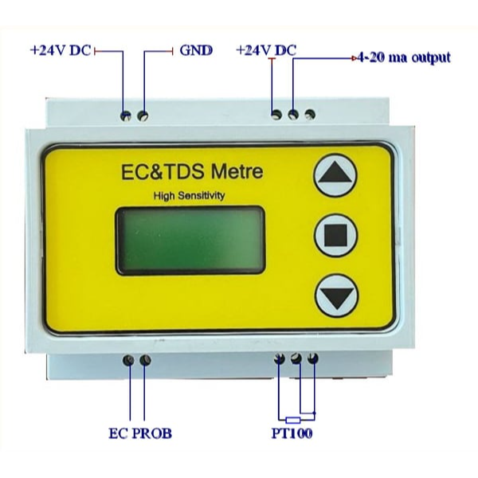
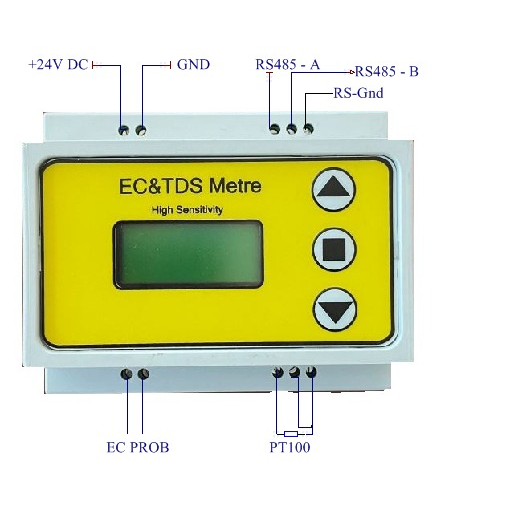
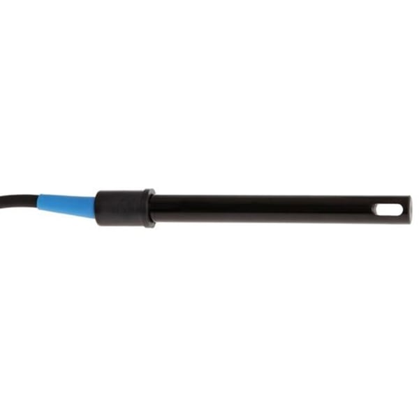
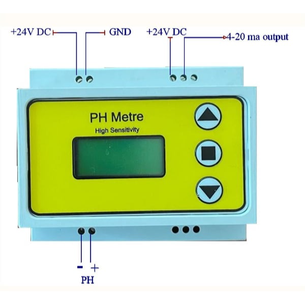
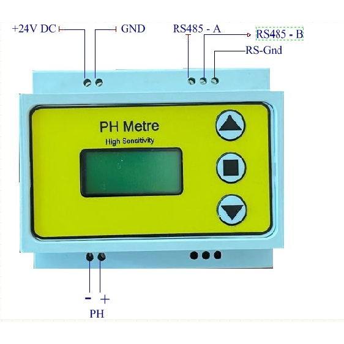
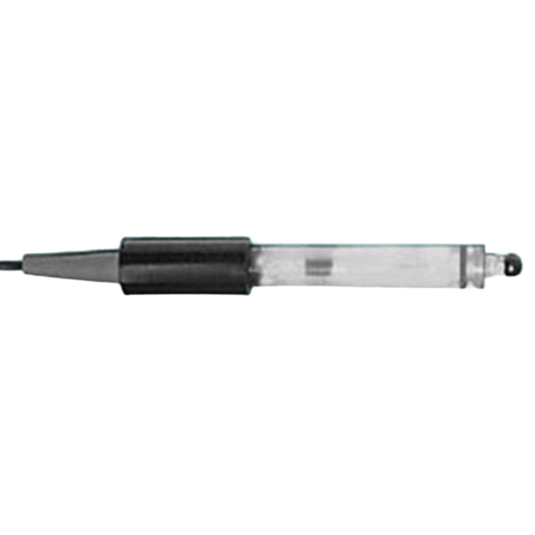
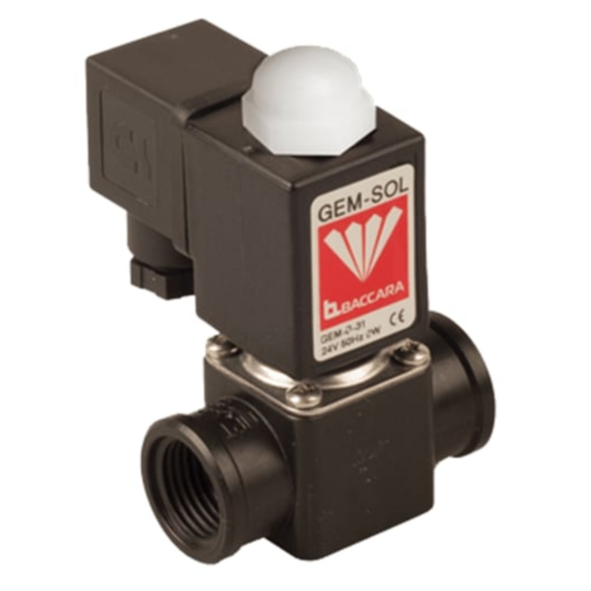
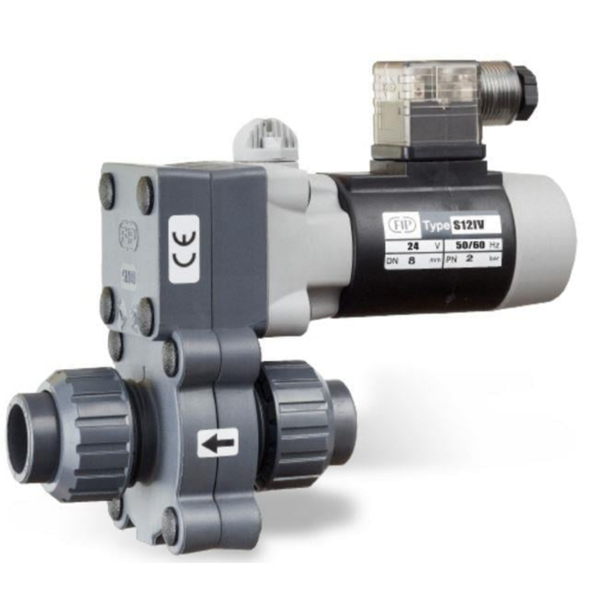
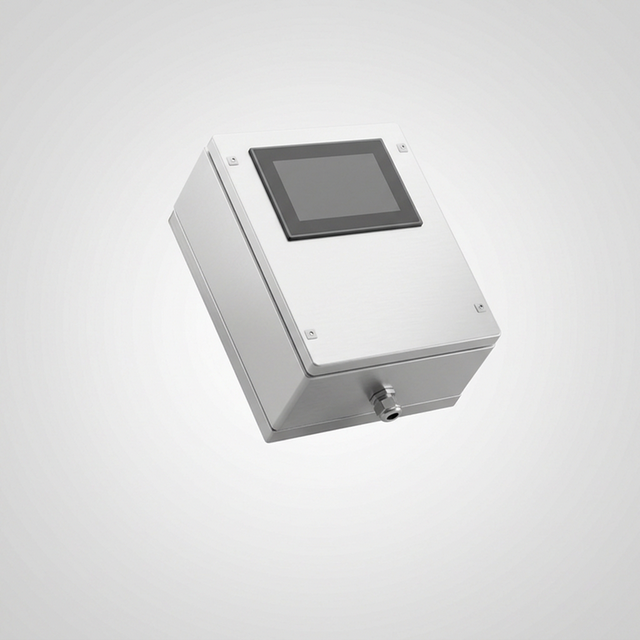

EC ve pH Ölçüm Sistemleri — Prob, Transmitter, Metre
Sera sulama ve gübreleme otomasyonu için kritik olan EC ölçüm ve pH ölçüm ekipmanları. EC transmitter, pH transmitter, hat üstü EC metre, hat üstü pH metre, EC probu ve pH probu seçenekleri ile hassas gübre dozlama ve drenaj kontrol sağlayın.
EC Ölçüm ve Dozlama Ekipmanları

EC Transmitter — Endüstriyel Hat Üstü EC Ölçüm
Endüstriyel EC transmitter (iletkenlik transmitteri). 4-20mA analog çıkış ile PLC'ye doğrudan bağlanır. Otomatik sıcaklık kompanzasyonu, sürekli EC ölçüm ve EC kontrol imkanı. Sera sulama otomasyonu ve gübreleme otomasyonu için vazgeçilmez.

EC Hat Üstü Metre — Anlık EC Ölçüm Cihazı
Hat üstü EC metre ile anlık EC değeri gösterimi. Dijital ekran, alarm çıkışları, taşkın uyarısı. EC ölçüm cihazı olarak sulama hattına doğrudan entegre edilir. Gübre dozlama kontrolünde referans değer olarak kullanılır.

EC Probu — Yüksek Hassasiyetli EC Sensör
Endüstriyel EC probu (EC sensör). Yüksek hassasiyetli iletkenlik ölçümü, uzun ömürlü elektrot, kolay temizlik ve kalibrasyon. EC ölçüm probları sulama hatlarında sürekli EC kontrol sağlar.
pH Ölçüm ve Dozlama Ekipmanları

pH Transmitter — Endüstriyel Hat Üstü pH Ölçüm
Endüstriyel pH transmitter. 4-20mA analog çıkış, otomatik sıcaklık kompanzasyonu. Sera sulama hattında sürekli pH ölçüm ve pH kontrol. Asit/baz pH dozlama sistemleri ile entegre çalışır.

pH Hat Üstü Metre — Anlık pH Ölçüm Cihazı
Hat üstü pH metre ile anlık pH değeri gösterimi. Dijital ekran ile kolay okuma. pH ölçüm cihazı olarak sulama ve gübreleme hatlarında kullanılır.

pH Probu — Yüksek Hassasiyetli pH Sensör
Endüstriyel pH probu (pH sensör). Cam elektrotlu yüksek hassasiyet. Sürekli pH ölçüm için tasarlanmış, hızlı yanıt süresi. pH kontrol sistemlerinin temel bileşeni.
Gübre Vanaları ve Kontrol Elemanları

Baccara Selenoid Vana — Sera Gübre Vanası
Baccara vana — sera gübre vanaları arasında en güvenilir marka. Sera selenoid vana olarak gübre dozlama hatlarında kullanılır. Yüksek basınç ve kimyasal dayanılıklık.

FIB Motorlu Vana — Sera Sulama Vanası
FIB vana — endüstriyel sera motorlu vana. Sulama vanası olarak ana hat ve dağılım hatlarında kullanılır. Motorlu kontrol ile otomatik açma/kapama, sera vana kontrol sistemi ile entegre.
Sera Kontrol Panosu

Sera Kontrol Panosu — EC/pH Entegre Otomasyon Panosu
Sera kontrol panosu ve sera otomasyon panosu. EC/pH transmitter, vana kontrol, pompa kontrol, alarm sistemleri bir arada. Sera elektrik panosu olarak tüm sulama ve gübreleme otomasyonunu merkezi yönetir.
EC ve pH Hakkında
EC nedir? EC (Electrical Conductivity — Elektriksel İletkenlik), sulama suyundaki çözünmüş gübre miktarını gösteren bir ölçüm birimidir. EC ölçüm ile bitkiye verilen gübre konsantrasyonu kontrol edilir.
pH nedir? pH, sulama suyunun asitlik/bazlık derecesini gösteren bir değerdir. pH ölçüm ile bitki besin elementlerinin emilim verimliliği optimize edilir. Genellikle sera sulamasında pH 5.5-6.5 arasında tutulur.
Drenaj kontrol ile bitki köklerinden dönen fazla gübreli suyun EC ve pH değerleri ölçülür, drenaj ölçüm sistemi ile geri kazanım veya atım kararı otomatik verilir.
EC/pH Ölçüm Sistemi İçin Teklif Alın
Sera projenize uygun EC ve pH ölçüm ekipmanlarını birlikte belirleyelim.
📩 Teklif Alveya WhatsApp: +90 506 680 05 25